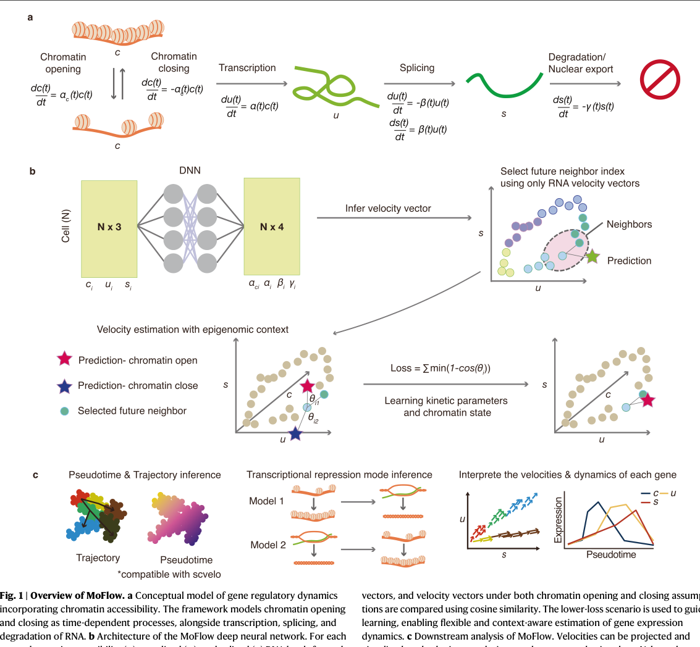
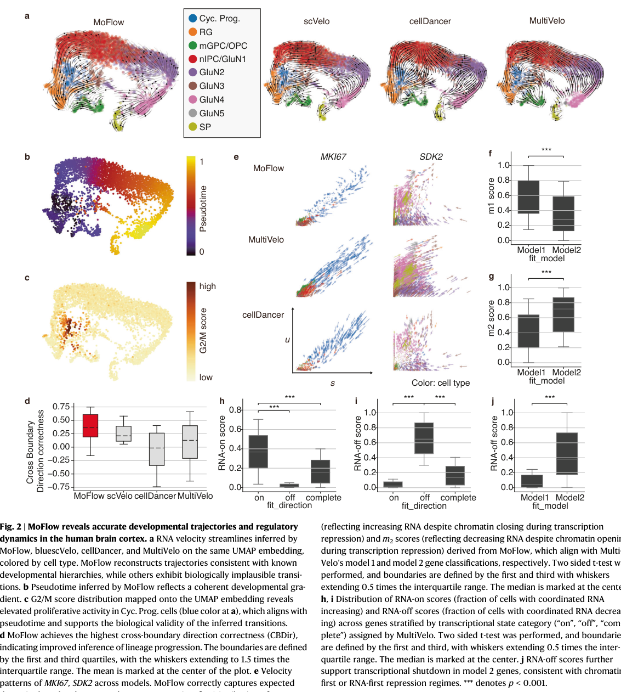
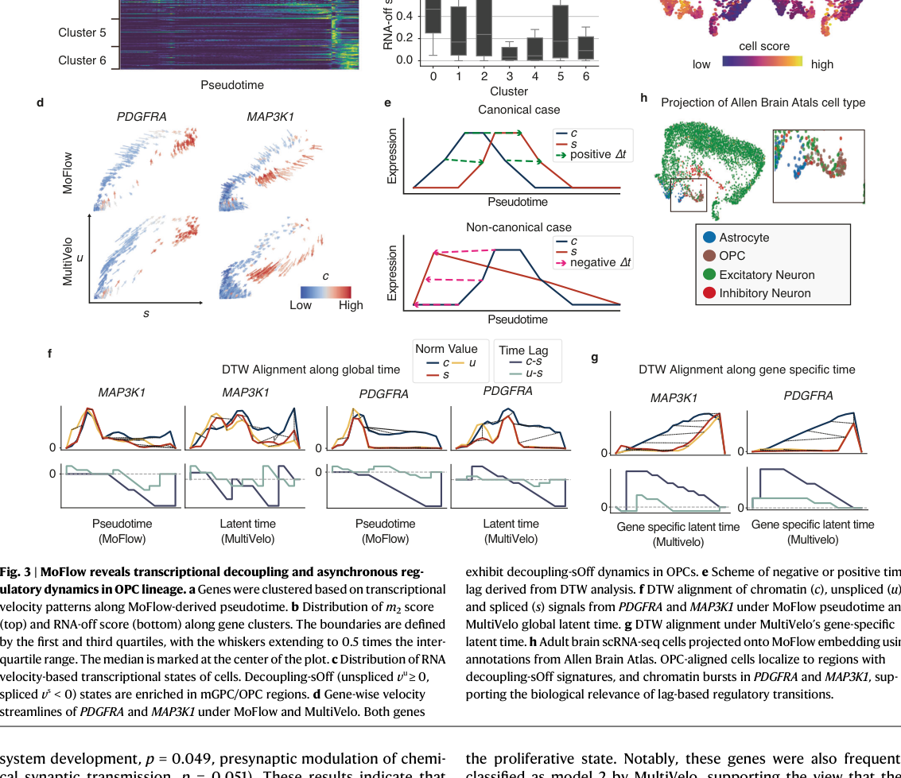
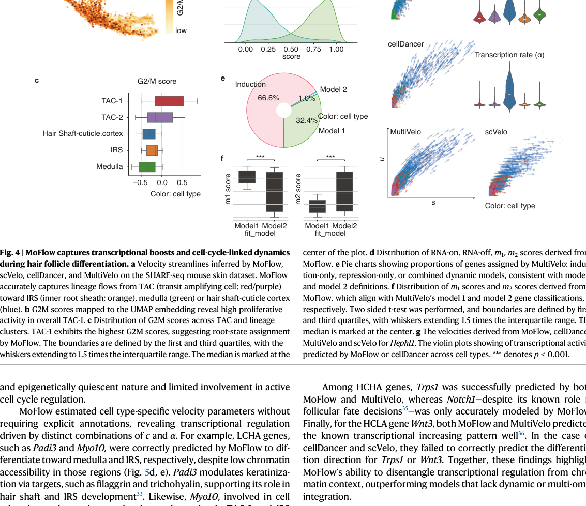
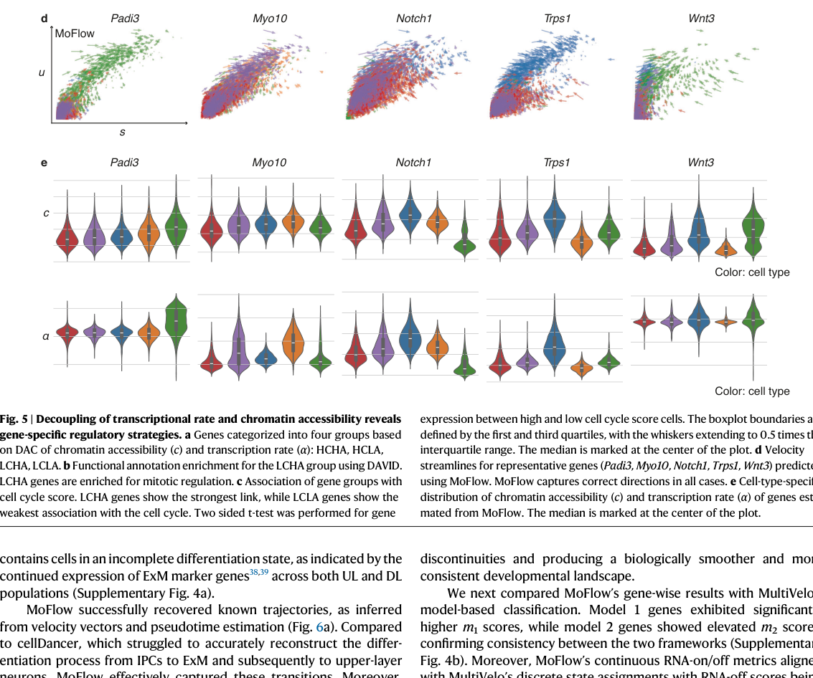
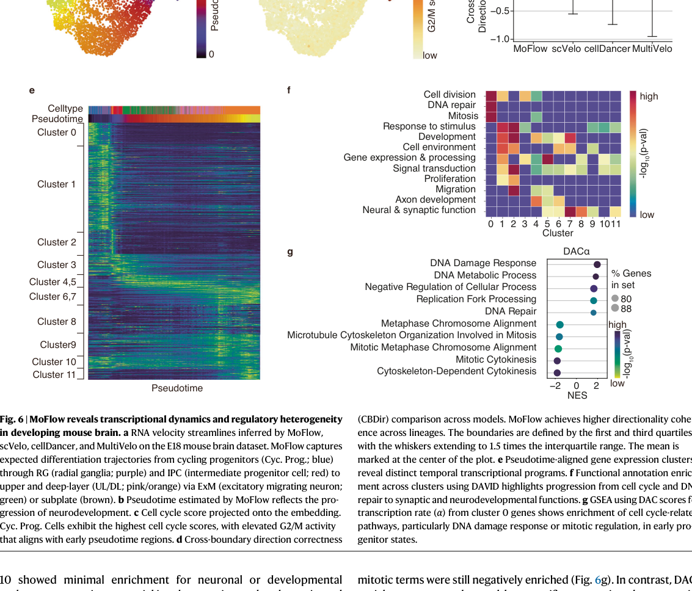
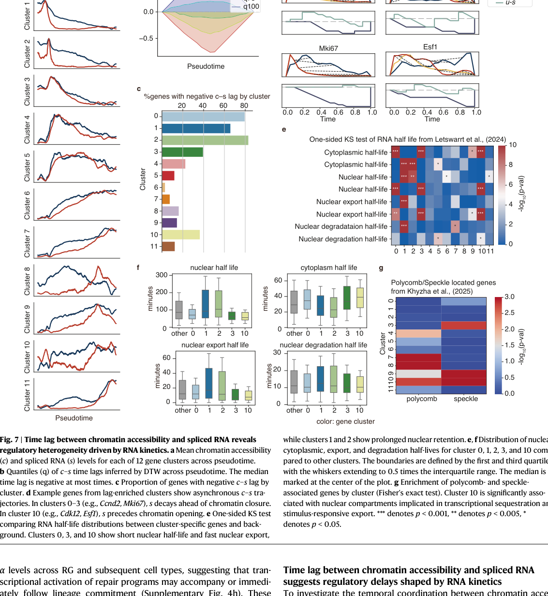

각 cell과 gene의 chromatin accessibility c, unspliced RNA u, spliced RNA s.
DNN이 cell-specific alpha_c, alpha, beta, gamma를 예측하고 local future neighbor와 velocity 방향을 맞춘다.
global latent time 대신 local relay alignment를 쓰고, chromatin opening/closing 중 낮은 angular error를 선택한다.

chromatin closing 중에도 unspliced RNA가 증가하는 delayed repression score.
chromatin이 열려 있는데 RNA가 감소하는 asynchronous repression score.
vu, vs 부호로 coordinated activation/repression fraction을 계산.

CBDir: MoFlow 0.362, MultiVelo 0.211, scVelo 0.211, cellDancer -0.015.
MultiVelo model 1 gene은 MoFlow m1 score가 높고, model 2 gene은 m2 score가 높다. 즉 fixed switching time 없이도 repression mode를 continuous하게 읽는다.
model 2 gene은 Cyc. Prog.에서 높고 RG로 갈수록 감소한다. cell cycle gene repression이 chromatin closure보다 먼저 시작될 수 있다는 해석과 맞는다.

c-s lag가 남음400개 초과 gene이 25% 이상 bin에서 lag sign reversal, 129개 gene은 75% 초과 bin에서 consistent reversal.
PDGFRA/MAP3K1의 negative lag가 사라지고 expected c -> u -> s 순서로 정렬된다.
OPC-aligned region의 decoupling signature를 유지한다. decoupling-sOff region에서 OPC projection은 63%, complementary region은 20%였다.

c와 alpha의 cell-type variability로 HCHA, HCLA, LCHA, LCLA를 정의한다.
low chromatin variability but high transcription rate variability. chromosome segregation, cell division, mitotic spindle organization에 enriched된다.
Padi3, Myo10은 low chromatin accessibility region에서도 MoFlow가 medulla/IRS 방향을 맞췄다.


MoFlow는 Cyc. Prog. -> RG -> IPC -> ExM/SP -> UL/DL 흐름을 포착한다. 다른 model은 IPC에서 RG/Cyc. Prog.로 향하는 backflow를 보였다.
cluster 0의 alpha DAC는 DNA repair, DNA damage response, mitotic regulation에 enriched되어 early progenitor stress-response program을 시사한다.
c-s lag gene 비율이 높음short nuclear half-life, fast export, prolonged nuclear retention, polycomb/speckle-associated RNA가 lag pattern과 연결된다.

HSC/MPP에서 erythroid, myeloid, lymphoid, megakaryocyte/platelet branch가 갈라지는 hierarchy를 대체로 복원.
scVelo와 cellDancer는 downstream progenitor에서 HSC로 돌아가는 spurious backflow를 보임.
overly linear flow로 natural branching pattern이 흐려지는 경향.
cellDancer식 relay velocity에 chromatin-aware kinetic parameter를 결합했다.
chromatin-dependent repression, chromatin-independent transcriptional boost, RNA export-linked lag를 구분한다.
nascent RNA, nuclear/cytoplasmic RNA fraction, perturbation으로 predicted lag와 alpha burst를 검증해야 한다.